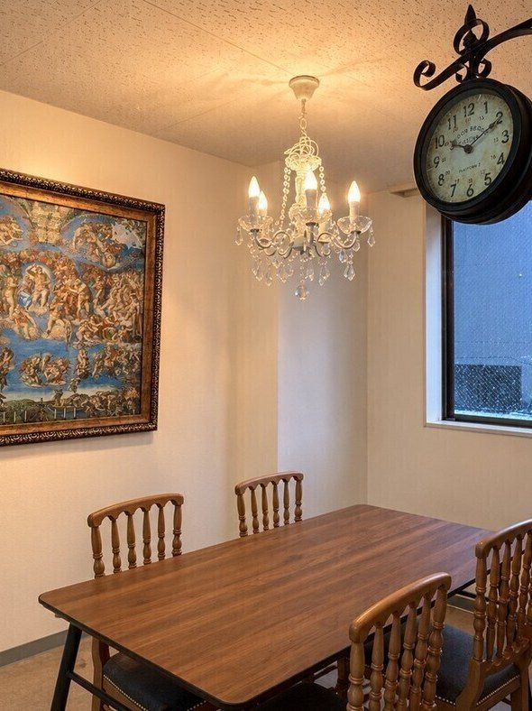
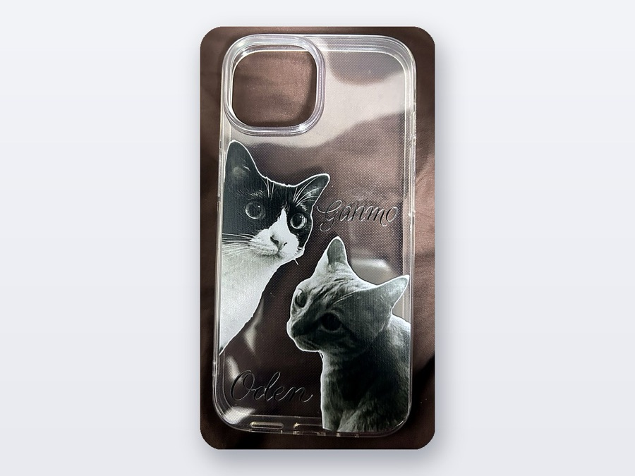
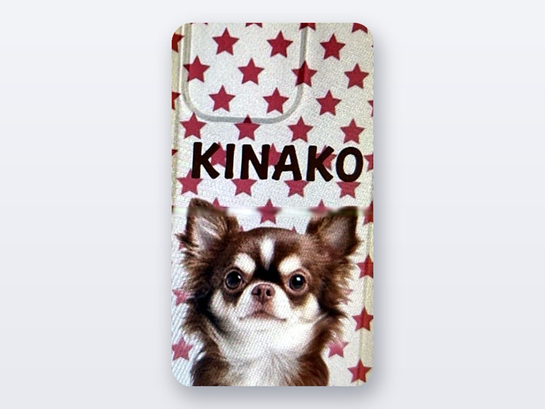
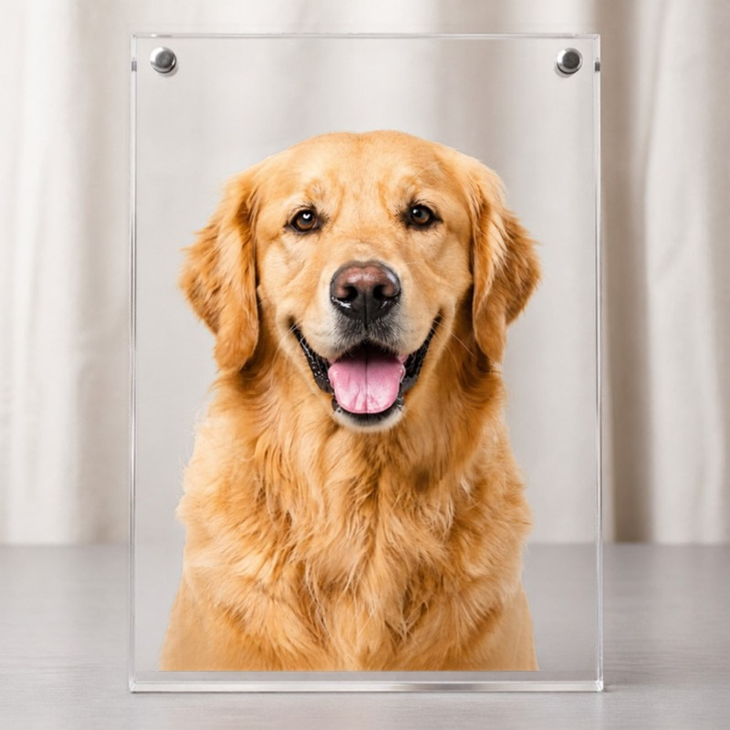
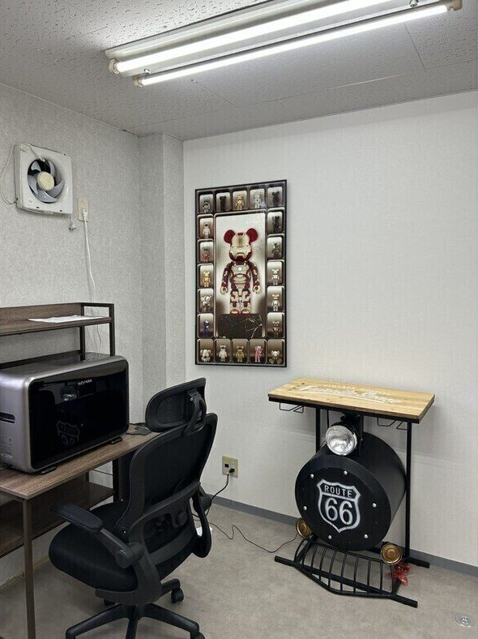
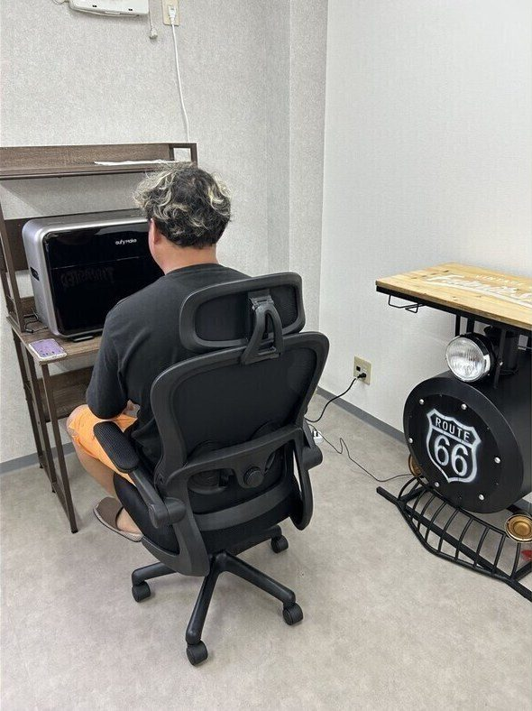
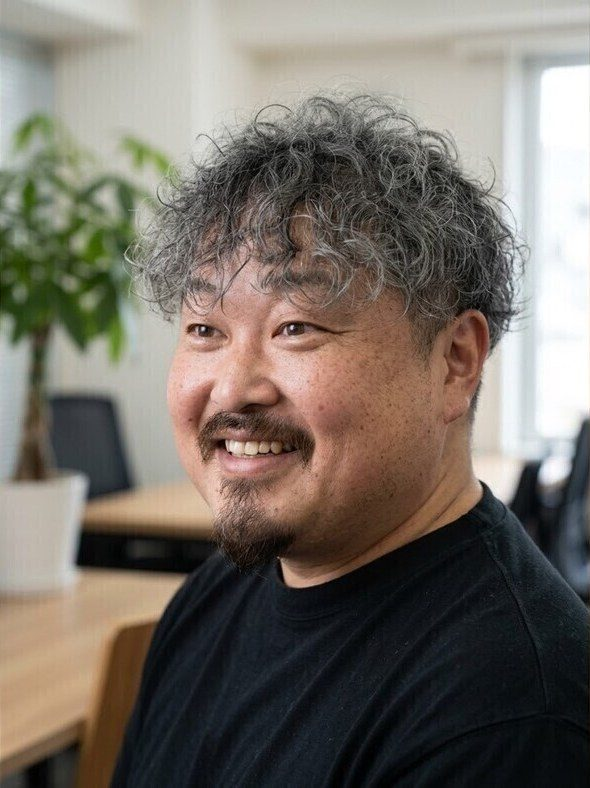
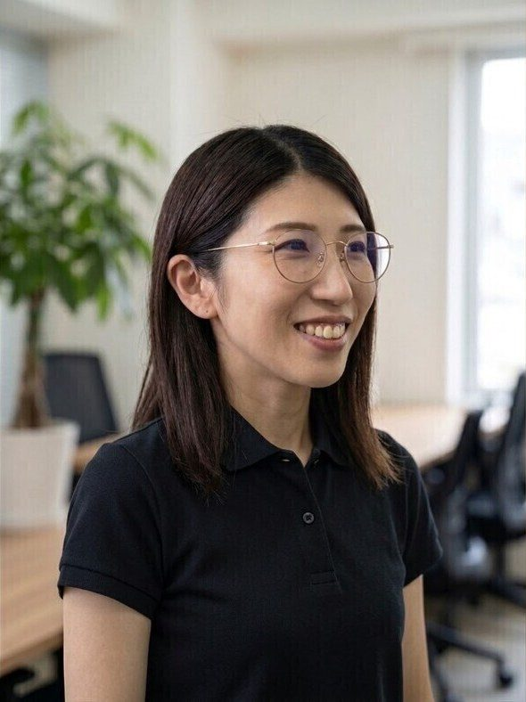

福岡市西区今宿 就労継続支援B型
体調や気持ちに波があっても、自分のペースで働ける場所。
LICO（リコ）は、障がいや生きづらさがあって、一般企業で働くのが不安な方のための事業所です。YouTube動画編集や3Dプリンターなど、新しいことにゆっくり挑戦できます。見学と体験は無料です。
- 定員20名・少人数
- 月〜金 10:00〜15:00
- 在宅勤務も相談できます
ペットのオリジナル商品
メンバーがつくる、ペットのオリジナル商品
LICOでは、ペットの写真でつくるスマホケースやメモリアルボードなど、オリジナル商品（ITTENMON／LICO PET original）を、利用者のメンバーが一点ずつ、心をこめてつくっています。
写真のデータを整えるところから、仕上げ、梱包まで。大切なペットの思い出に関わる品だからこそ、ひとつずつ、ていねいに向き合っています。
全国の動物病院やペットサロンなどに、オンラインショップのチラシを置いていただいています。



- 写真のデータを整える
お客様の写真を、つくれる形に調整します。 - 仕上げる
できあがりを確かめながら、ひとつずつ仕上げます。 - 梱包する
ていねいに包んで、お届けします。
保護猫・保護犬への寄付
売上の一部は、保護猫・保護犬の保護活動をしている団体に寄付します。

LICOのこと
絆と自信で、一歩を踏み出す場所。
LICOは福岡市西区今宿にある、定員20名の小さな事業所です。障がいや生きづらさを抱えていても、自分らしく働き、社会とつながれる場所をつくりたいと思って始めました。
名前のLICOは、Link（絆）とConfidence（自信）の頭文字です。スタッフや仲間とのつながりが、少しずつ自信になっていくと考えています。
- 少人数だから、ひとりずつ見られるスタッフが一人ひとりの状態や希望を把握して支援します。大人数だと不安になる方も、安心して通えます。
- 目標は、一緒に決めるサービス管理責任者が、希望・体調・生活に合わせた個別支援計画をつくります。6か月ごとに一緒に振り返ります。
- 毎日来なくても大丈夫体調に合わせて、通う日数や時間を調整できます。小さな一歩から始めましょう。
作業内容
LICOでの作業
-
YouTube動画編集
カットやテロップ入れなどの編集作業です。未経験の方も、基本操作から少しずつ一緒に学びます。
-
3Dプリンターでのものづくり
作業室の3Dプリンターを使って、ものをつくる作業です。「やってみたい」から始められます。

-
パソコン作業・軽作業
PCでのデータ入力のほか、袋詰め・仕分け・梱包などの軽作業、清掃・環境整備があります。生活スキルや就労準備のプログラムも行っています。
-
在宅での働き方の相談
通うのが難しい方は、在宅での勤務もご相談ください。体調や生活スタイルに合わせた働き方を一緒に考えます。
こんな方が対象です
- 障害福祉サービス受給者証をお持ちの方
- 精神障がい・知的障がい・発達障がいの方
- 身体障がいのある方（在宅のみ対応可能）
- 一般企業への就労が難しい・不安な方
- 自分のペースで働く場所を探している方
- 18歳以上の方（上限年齢なし）
1日の流れ
ゆとりのある、1日のスケジュール
開所・朝礼
スタッフが出迎えて、体調を確認します。全員で集まり、今日の作業内容と連絡事項を共有します。
午前の作業・個別支援
個別支援計画に沿った作業やプログラムを行います。スタッフが個別にサポートします。
昼食・休憩
ゆっくり食事と休憩をとります。雑談や交流の時間でもあります。（昼食の提供については要相談）
午後の作業・プログラム
午前に続いて、それぞれのペースで作業します。
終礼・帰宅
今日1日を振り返り、「今日もお疲れ様でした」の声かけで終わります。
スタッフ
スタッフ紹介
-

サービス管理責任者・管理者
小西 洋輔
事業所全体の運営を担当します。利用者の方ひとりひとりに合わせた個別支援計画を作成し、目標に向けた支援の全体をまとめます。
-

生活支援員
小西 あゆみ
日々の支援を担当します。利用者の方が安心して通えるよう、一人ひとりの「できた」を一緒に喜びたいと思っています。
-
職業指導員
熊谷
-
職業指導員
山本
-
職業指導員
門田
LICOでは、スタッフも募集しています。お気軽にお問い合わせください。
見学・体験の流れ
まずは見学から。無料です。
- LINEで問い合わせ見学の希望日など、気軽にご連絡ください。
- 見学・個別相談（無料）実際の作業の様子を見ていただけます。予約制です。
- 体験利用（無料）必要であれば、体験もできます。
- 受給者証の取得手続きをお手伝いします。
- 契約・個別支援計画の作成希望や体調を聞きながら一緒に決めます。
- 利用開始無理のないペースで始めましょう。
利用料と工賃について
利用料（自己負担）は世帯収入に応じて月額の上限が決まり（0円〜37,200円）、多くの方が無料または少額で利用できます。
工賃は、作業の内容や時間など、状況によって変わります。くわしくは見学のときにご説明します。
よくある質問
よくある質問
就労継続支援B型とはなんですか？
障害や体調などの理由から一般企業での就労が難しい方が、生産活動（作業）を通じて働く練習をしながら工賃（給与のようなもの）を受け取れる福祉サービスです。雇用契約は結ばないため、自分のペースで無理なく通えます。
受給者証がないと通えませんか？
通うためには障害福祉サービス受給者証が必要ですが、持っていない方の取得も一緒にサポートします。まずはお気軽にご相談ください。手続きについて丁寧にご説明します。
毎日通わないといけませんか？
継続して通っていただくことで、生活リズムが整い工賃アップにもつながるため、できるだけ多くの日数を通っていただくことをおすすめしています。とはいえ体調や生活リズムに波がある方もいらっしゃいますので、無理のない頻度から始めて、少しずつ通う日数を増やしていけるよう個別支援計画の中で一緒に考えます。
利用料（自己負担）はいくらですか？
世帯収入に応じて月額の上限が決まり（0円〜37,200円）、多くの方が無料または少額で利用できます。詳しくはお問い合わせいただくか、市区町村の窓口でご確認ください。
工賃はどのくらいもらえますか？
作業の内容や時間など、状況によって変わります。くわしくは見学のときにご説明します。
見学・体験はできますか？
はい、随時受け付けています。見学は無料・予約制で、実際の作業の様子をご覧いただけます。体験利用も無料でご利用いただけます。まずはLINEでご連絡ください。
精神障がい・発達障がいの方も利用できますか？
はい、精神障がい・知的障がい・発達障がいのある方が対象です。身体障がいのある方は、在宅での利用のみ、ご相談いただけます。障害者手帳の有無にかかわらず、医師の意見書等で受給者証を取得できる場合もあります。まずご相談ください。
通所が難しい場合、在宅での作業はできますか？
在宅での作業をご希望の方は、まずはお気軽にご相談ください。体調や生活スタイルに合わせた働き方を一緒に考えます。
YouTube動画編集や3Dプリンターは未経験でもできますか？
はい、未経験の方も大歓迎です。「やってみたい」という気持ちを大切に、基本操作から少しずつ一緒に学んでいきます。得意なことを見つけながら、自分のペースでスキルを伸ばせます。
アクセス・お問い合わせ
まずは気軽にご相談ください
見学・体験・受給者証の取得など、小さなことでも構いません。LINEか電話でご連絡ください。LINEの返信は営業日（月〜金）中に行います。お名前とお問い合わせ内容を送っていただくとスムーズです。
| 事業所名 | LICO（リコ） 就労継続支援B型 |
|---|---|
| 所在地 | 福岡市西区今宿東1丁目19-14-3号 地図を開く |
| 電話 | 092-407-8842 |
| 営業日 | 月〜金曜（祝日も営業）9:00〜18:00 |
| 利用時間 | 10:00〜15:00 |
| 定員 | 20名 |
| 開所 | 2026年11月1日 |
| 運営法人 | 株式会社かむらっど |
LICOのオリジナルペットグッズは、オンラインショップ（LICO PET original）で販売しています。